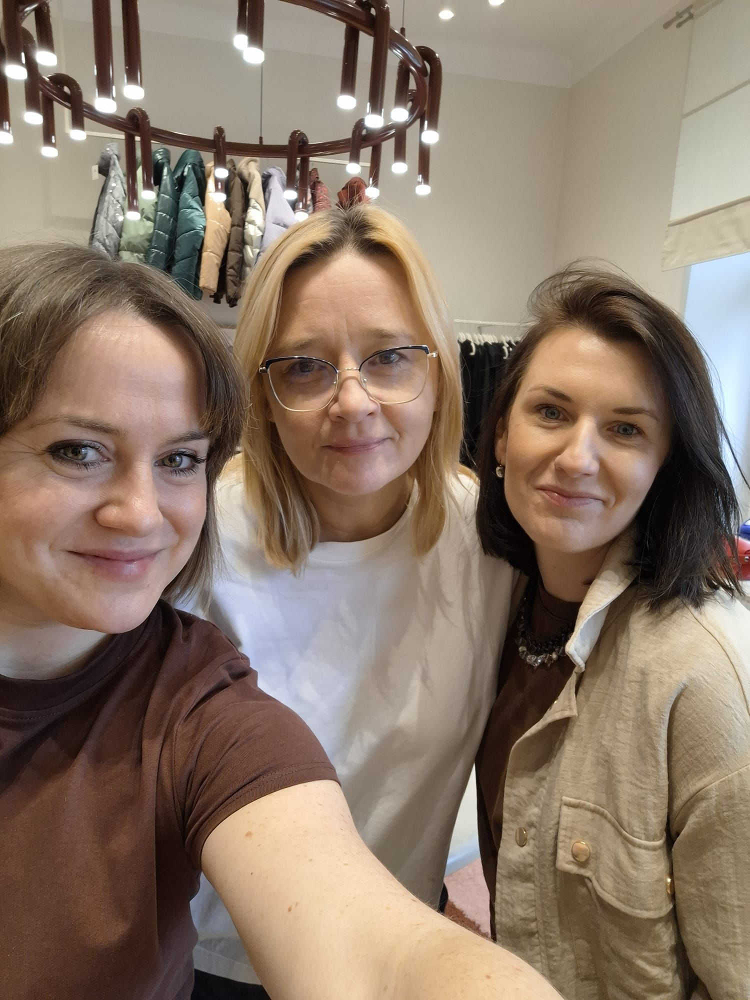

O nas
Za Ariańską Selection stoją Mania, Kasia i Iza.
Trzy dziewczyny, które stworzyły miejsce pełne uważności, koloru i rzeczy z charakterem. Ariańska Selection powstała z potrzeby wybierania lepiej: spokojniej, bliżej ludzi i z większą czułością do ubrań, które już mają swoją historię.

Nasze podejście
Nie szukamy rzeczy przypadkowych.
Każda rzecz trafia tu po selekcji: oglądamy materiał, stan, proporcje, kolor i to trudne do nazwania “coś”, które sprawia, że ubranie chce się nosić dalej. Nie chodzi o ilość. Chodzi o wybór, który ma sens.
Ariańska to również spotkania, dodatki, eventy tematyczne i warsztaty. Miejsce przy ul. Ariańskiej 18/1 w Krakowie ma być nie tylko sklepem, ale spokojnym punktem dla osób, które lubią styl z historią.
Odwiedź nas
ul. Ariańska 18/1, Kraków.
Wpadnij zobaczyć aktualną selekcję, przymierzyć pojedyncze sztuki albo porozmawiać o tym, czego szukasz. Najświeższe dropy i zapowiedzi spotkań znajdziesz też na Instagramie: @arianska.selection.
Wróć do selekcji